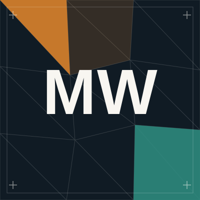
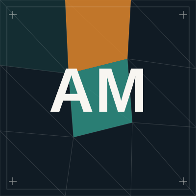

We turn spatial data into working software.
Datum is founded by geoinformatics engineers from Universiti Teknologi Malaysia. We work with field surveys, satellite imagery and drone data, and we build the maps, dashboards and applications that put it to use.
Why we started Datum.
Most GIS specialists hand over a map and walk away. Most web developers have never opened a shapefile. We started Datum to close that gap.
"We kept noticing the same gap: spatial data was being collected everywhere — drones, satellites, GNSS receivers, field surveys — but rarely reaching the people who needed it, in a form they could use."
The three of us met studying Geoinformatics at Universiti Teknologi Malaysia — trained in surveying, spatial analysis and remote sensing, but each of us pulled toward a different piece of the problem: field data and systems, satellite imagery and automation, and the web products that make it all usable.
Datum exists so a client never has to hire a GIS consultancy and a web development agency separately, then manage the handoff between them. One team stays responsible for all of it — the data, the analysis, and the software it becomes.
Already proven in the field. Before Datum had a name, all three of us had already delivered a live community biodiversity platform together — a real system, already in use, long before we had a company name.
Field-Verified
We run our own GNSS surveys, drone flights and LiDAR capture — so we understand the data from the ground up, not just on screen.
AI-Augmented
Computer vision and automated feature extraction speed up digitization and analysis that used to take days of manual work.
Full-Stack Delivery
We don't hand off a shapefile and disappear. We build and deploy the database, dashboard and web app your data actually lives in.
Engineering Foundation
Trained in geoinformatics at UTM — grounded in surveying, spatial science and software engineering fundamentals.
Every project follows the same four steps.
Collect
GNSS survey, drone and LiDAR capture, or satellite acquisition — gathering spatial data at the source.
Analyze
Spatial analysis, remote sensing and AI-assisted feature extraction turn raw data into insight.
Build
Databases, dashboards, web applications and PWAs that put the analysis in front of real users.
Deploy & Support
We launch it, hand over training, and stay on to support and extend the system as it grows.
GIS and web development, under one roof.
Hire us for GIS work, web development, or both — one team, no handoff between agencies.
GIS & Geospatial Services
SURVEY · ANALYSIS · AUTOMATION-
Spatial Analysis & Cartography
Vector and raster analysis, spatial statistics (KDE, Ripley's K), and presentation-ready map production.
-
Remote Sensing
Multi-sensor satellite processing across Landsat, Sentinel, MODIS and GOSAT for environmental and atmospheric analysis.
-
Survey & Field Data Collection
GNSS survey, drone and LiDAR photogrammetry, orthophoto processing and georeferencing.
-
Geospatial AI & Automation
AI-assisted feature extraction, auto-vectorization and scripted GIS pipelines for large datasets.
Web & Software Development
DASHBOARDS · APPS · SUPPORT-
Web GIS & Interactive Dashboards
Map-based dashboards that turn spatial databases into something a non-technical team can actually use.
-
Full-Stack Web Applications
PHP and Node.js applications backed by PostgreSQL/PostGIS or MySQL, built and deployed end to end.
-
Progressive Web Apps
Offline-capable, mobile-first apps for field teams and community data collection.
-
UI/UX Design
Figma-driven interface design that makes technical, data-heavy products feel simple to use.
What we build with
The team behind Datum.
Every project passes through all three of us. Here's who leads which part.
N 1.4927° · E 103.7414° — JOHOR BAHRU, MALAYSIA

WEB & PRODUCT LEADMuhammad Warith Iskandar
Co-Founder — Web & Dashboard DevelopmentHands-on web builder who turns spatial and environmental data into interfaces people actually enjoy using — dashboards for field teams, apps for whole communities.
Wan Muhammad Irman
Co-Founder — Geospatial EngineeringMeasures the world, then builds the tools that make those measurements useful. Handles GNSS field survey, spatial databases, and the software they end up powering.

REMOTE SENSING & AI LEADAhmad Muizzudin
Co-Founder — Remote Sensing & Geospatial AITurns raw satellite and drone imagery into usable geographic intelligence — bridging remote sensing, geospatial AI and automated processing pipelines.
All three of us studied Geoinformatics together at Universiti Teknologi Malaysia — and had already shipped real, live systems together long before Datum had a name.
Selected work
A mix of joint studio projects and individual specialist work across GIS, remote sensing and web development.
Kampung Sungai Timun Biodiversity Platform
A community biodiversity reporting ecosystem built for KST UTM in partnership with ST Bioventure. Residents log local flora and fauna through a gamified progressive web app, while a live web GIS dashboard visualizes observation data and biodiversity hotspots in real time.
DBKU Urban Tree Management & Dashboard
Developed for Dewan Bandaraya Kuching Utara during a UTM GIS field camp. A structured system for recording and tracking urban trees across Kuching North, paired with an interactive dashboard visualizing tree distribution and estimated CO2 absorption for the Satok area.
GIS Maps Design
Clean, presentation-ready cartography built from raw INEGI geospatial datasets — layered in QGIS, finished for labeling and styling.
View on Muizzudin's siteAI Automatic Orthophoto Digitization
Computer-vision-assisted feature extraction that turns raw orthophotos into clean vector layers, cutting manual digitization time.
View on Muizzudin's siteSatellite Data Processing Pipelines
Batch conversion of raw GOSAT methane and NASA IMERG rainfall datasets into clipped, analysis-ready GeoTIFF rasters.
View on Muizzudin's siteSpatial Crime & KDE Analysis
Kernel density estimation and spatial statistics applied to incident data, producing heatmaps built for non-technical stakeholders.
View on Muizzudin's siteLiDAR & Orthophoto Processing
Point-cloud and orthophoto processing with CRS refinement and georeferencing for drone-captured survey sites.
View on Muizzudin's siteLost & Found Web App
A QR-code-based reporting system that helps a campus community reunite lost items with their owners.
Visit Live SiteWeather Dashboard
Real-time Malaysian weather visualization with live rain-cluster mapping.
Visit Live SiteBreathing Klang GIS StoryMap
A scroll-based StoryMap analyzing optimal IoT air-quality sensor placement across Klang, Malaysia, built as a university GIS research project.
Visit Live SiteKLCC Interactive Tower Explorer
A custom-modeled 3D explorer for the Petronas Twin Towers with clickable landmark hotspots, rendered in real time in the browser.
Visit Live SiteInteractive 3D Jaeger Showcase
A real-time WebGL showcase built around a custom 3D model, demonstrating asset-pipeline and interactive-rendering skills beyond flat web pages.
Visit Live SiteGet in touch.
Tell us what you're working with — field data, a dataset, or just a rough idea — and we'll tell you what it takes to turn it into a working system.
Thanks, there!
Your message is ready to send — for the fastest reply, tap WhatsApp on the left. We'll also follow up at the email you provided within 1–2 business days.